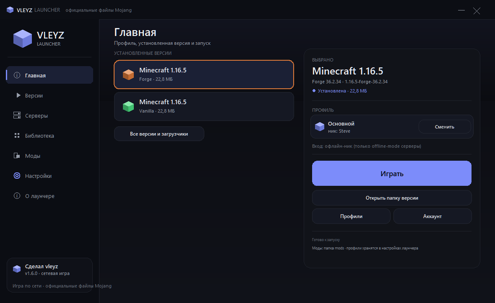
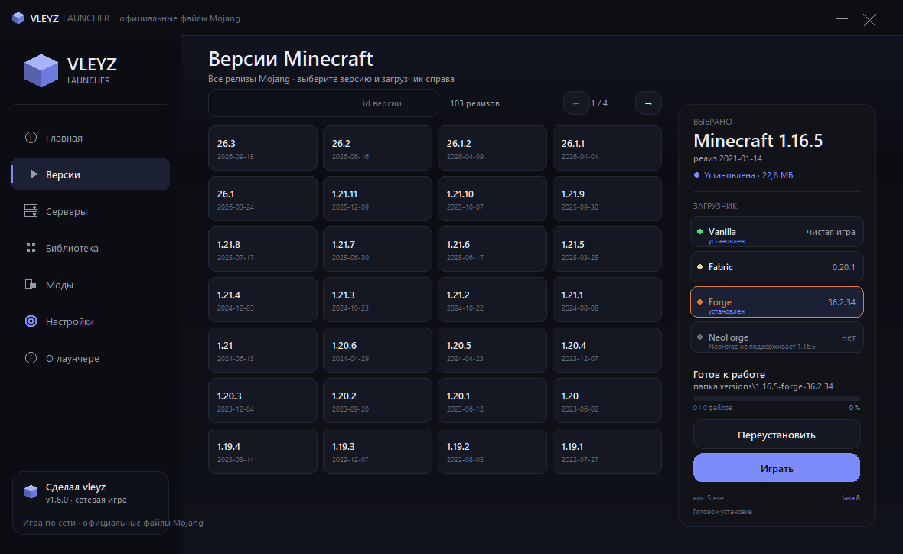
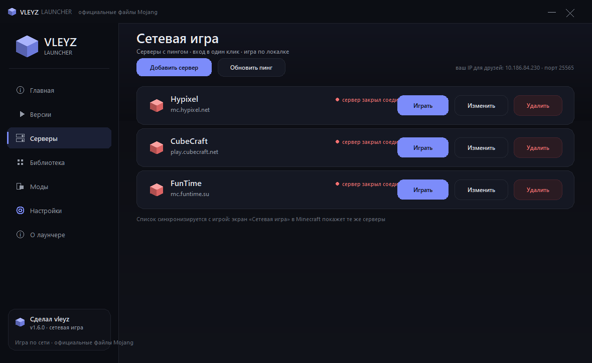
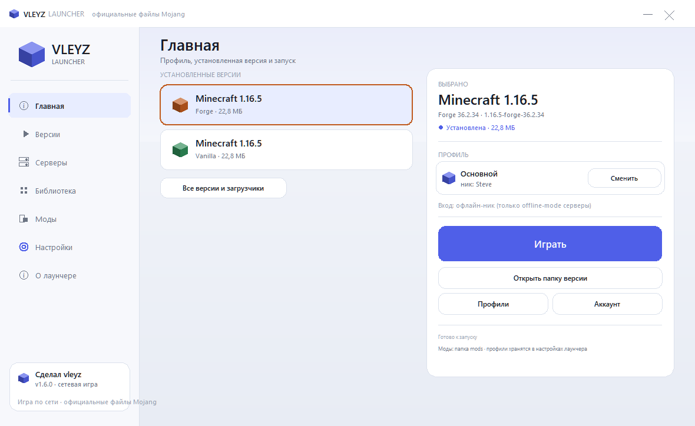

Один установщик — и весь Minecraft у тебя на ПК: любые официальные версии Mojang плюс Fabric, Forge и NeoForge. Java установится сама, файлы проверяются по SHA1.
Всё, что нужно, чтобы быстро скачать и запустить нужную версию игры — без лишнего.
Сетка релизов прямо на главной: 103 версии, поиск по названию и страницы. Скачивается только то, что выбрал ты.
Четыре режима на выбор: Vanilla, Fabric, Forge и NeoForge. Актуальные сборки видны сразу, недоступные сочетания честно помечены.
Если нужной Java нет, лаунчер скачает официальную JRE с Adoptium и будет держать её в своей папке — системные установки не трогает.
Размер и SHA1 для каждого файла из манифеста Mojang. Битые и подменённые загрузки отбрасываются и перекачиваются.
Вход Microsoft по коду устройства и Ely.by. Пароли и токены шифруются Windows DPAPI, телеметрии нет.
Никнейм, оперативная память от 1 до 12 ГБ, своя папка игры и путь к Java. Обычный .minecraft не трогается — твои миры на месте.
Файлы, проценты, скорость и текущий этап загрузки — всегда видно, что происходит и сколько осталось.
Лаунчер сам скачивает и ставит обновление, а кнопка «Проверить файлы» докачивает повреждённое.
Настоящие скриншоты: тёмная и светлая темы, версии, серверы и моды.




Три шага и меньше минуты. Ставится в профиль пользователя, права администратора не нужны.
Нажми «Скачать для Windows» и сохрани VleyzLauncher-Setup.exe. Не хочешь ставить — в том же релизе есть VleyzLauncher-portable.zip.
Двойной клик по установщику. Если Windows покажет синее окно SmartScreen — жми «Подробнее» → «Выполнить в любом случае».
Открой «Версии», найди нужную сборку, при желании выбери Fabric / Forge / NeoForge и жми «Скачать». Java подтянется автоматически.
Коротко о том, что спрашивают чаще всего.
%APPDATA%\VleyzLauncher\minecraft. Папку можно поменять в настройках. Твой обычный .minecraft лаунчер не трогает.%APPDATA%\VleyzLauncher: config.json и папка logs. Пароль и токены Ely.by, токены Microsoft шифруются через Windows DPAPI и не читаются на другом ПК.VleyzLauncher-Setup.exe — профили, миры и настройки сохранятся.Один установщик — и все версии Minecraft на месте.
⬇ Скачать Vleyz Launcher